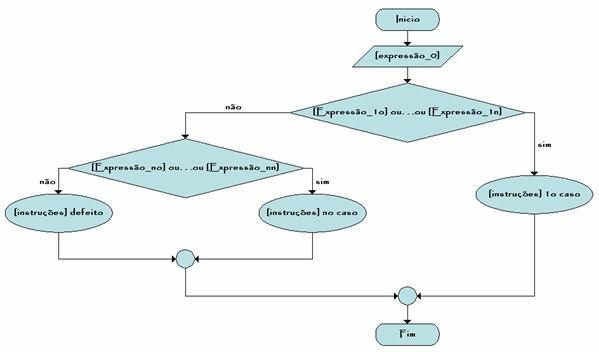

Escolhe [expressão_0]
Caso [Expressão_1o],.
. .,[Expressão_1n],:
[instruções]
. . . . . . . . . . .
Caso [Expressão_no],.
. .,[Expressão_nn],:
[instruções]
Defeito:
[instruções]
FimEscolhe
Esta estrutura compara a expressão_0 com as restantes expressões (expressão_1
. . . expressão_n) e se a comparação for positiva esxecuta as instruções do Caso
e sai.
A estrutura tem um caso por defeito (opcional) que é executado quando todas as
outras condições falharem.

inicio
caracter sexo
escrever "Qual o seu sexo :"
ler sexo
escrever "Olá "
escolhe sexo
caso
"m" :
escrever
"Homem"
caso
"f" :
escrever
"Mulher"
defeito :
escrever
"Sexo indefinido"
fimescolhe
escrever ", bemvindo ao portugol"
fim
Qual o seu sexo ?: m
Olá Homem, benvindo ao Portugol